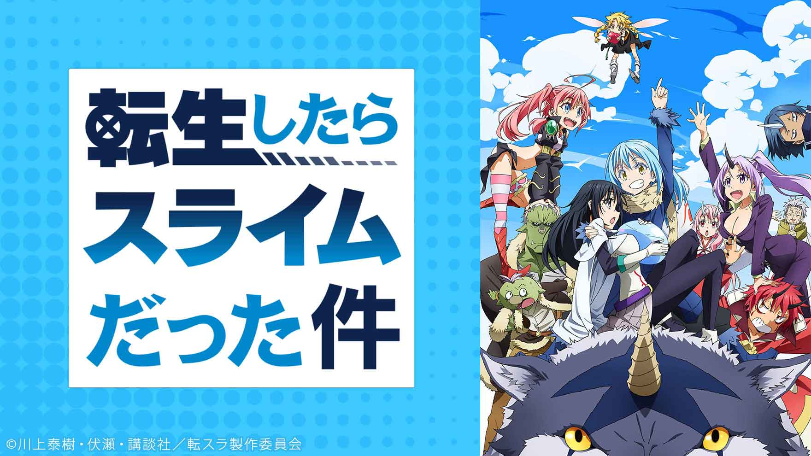

異世界系
転生したらスライムだった件

あらすじ
主人公リムルは、ドラゴンにゴブリン、ドワーフやオーガなど 多種多様な種族と出会い、この世界のあり方を知っていく。 そして、時にユーモラス、時にシリアスに展開する物語の先に待つのは、魔王の存在。 一匹のスライムが身につけたスキルを駆使し、 知恵と度胸で仲間を増やしていく。 ファンが待ち望んでいた転生エンターテインメント、いよいよアニメで開幕！
© 川上泰樹・伏瀬・講談社／転スラ製作委員会
キャスト
リムル ：岡咲 美保 大賢者 ：豊口 めぐみ ヴェルドラ：前野 智昭
ベニマル：古川 慎 シュナ ：千本木 彩花 シオン ：M・A・O
ソウエイ：江口 拓也 ハクロウ：大塚 芳忠 リグルド ：山本 兼平
ゴブタ ： 泊 明日菜 ランガ ：小林 親弘 ゲルド ：山口 太郎
ガビル ：福島 潤 トレイニー：田中 理恵 ミリム ：日高 里菜
ラミリス：春野 杏 ディアブロ：櫻井 孝宏
感想
主人公はスライムなのに最強。転生エンターテインメントアニメ
転生最強主人公系のアニメは今までいくつか見てきましたが、スライムは初めてだったので新鮮でした。
スライムが成長していく姿はRPGをプレイしている感覚で、いきなり最強スタートじゃないのも個人的には好印象でした。
昨日の敵は今日の友。仲間との絆も楽しめる作品になってるのでおすすめです。
盾の勇者の成り上がり

あらすじ
ごく平凡なオタク大学生・岩谷尚文は、図書館で出会った1冊の本に導かれ異世界へと召喚されてしまう。
与えられた使命は、剣、槍、弓、盾をまとう四聖勇者の一人「盾の勇者」として、世界に混沌をもたらす
災い「波」を振り払うこと。大冒険に胸を膨らませ、仲間とともに旅立った尚文。
ところが、出発から数日目にして裏切りに遭い、金も立場もすべて失ってしまう。
他人を信じられなくなった尚文は奴隷の少女・ラフタリアを使役し、波に、世界に、立ち向か
おうとするが―。
果たして、この絶望的状況を打破することはできるのか?
すべてを失った男の成り上がりファンタジー、開幕。
© 2021 アネコユサギ／KADOKAWA／盾の勇者の製作委員会
キャスト
岩谷尚文： 石川界人 ラフタリア： 瀬戸麻沙美
天木 錬： 松岡禎丞 北村 元康： 高橋 信
川澄 樹： 山谷祥生 フィーロ ： 日高里菜
メルティ： 内田真礼
感想
ー異世界転生してしまった主人公がなにもかも奪われ復讐心に燃え成り上がる物語ー
4人が異世界転生したが主人公・岩谷尚文だけがこの世界について無知で何もかもを奪われ、その後復讐心のみで成長し 成りあがっていくのがすっきりかつ、応援したくなるような作品です。人の悪いところが見える作品なので万人受けはし ませんが個人的にはお勧めできるのでぜひご覧ください！
ノーゲーム・ノーライフ

あらすじ
ニートでヒキコモリ•••••• だがネット上では『 』の名で無敵を誇る天才ゲーマー兄妹・空
と白。
ただの都市伝説とまで言われるほどの常識外れな腕前を持った空と白の前に、ある日”神”を名乗る少年・テトが現れる。
テトはリアルをクソゲーと呼ぶ空と白の二人を異世界へと召喚してしまう。そこは一切の争いが禁じられ、全てがゲームで決まる世界だった！
異世界に住まう十六の種族の中で最弱の人類種。
多種族に国土の大部分を奪われ、滅亡寸前に追い込まれている人類種を救うため、空と白は空前絶後の頭脳バトルに挑む！
© 2014 榎宮祐・株式会社KADOKAWA メディアファクトリー刊／ノーゲーム・ノーライフ全権代理委員会
キャスト
空（そら）：松岡 禎丞 ステファニー・ドーラ：日笠陽子
白（しろ）：茅野 愛衣 クラミー・ツェル ：井口裕香
初瀬いづな：沢城 みゆき フィール・ニルヴァレン：能登麻美子
ジブリール：田村 ゆかり
テト ：釘宮 理恵
感想
全てが”ゲーム”で決まる！？超弩級の頭脳バトルファンタジー
今までの人生で「ゲーム」を一度でもプレイしたことがある人なら誰もが思う事であろう「負けたくない」を完全に実現したアニメでした。
ここでいう「ゲーム」は電子ゲームはもちろんのことオセロやトランプ、ジャンケンですら含んでいます。
すべての「ゲーム」で負けない主人公たちの姿は見ていて気持ちが良く、憧れて嫉妬してしまうほど魅力を持っている作品です。
ただ下ネタが含まれることが多々あるので苦手な方は注意して下さい。